In this talk, we combine the FOSLS method with the FOSLL method to create a Hybrid method. The FOSLS approach minimizes the error,
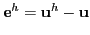
, over a finite element subspace,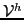
, in the operator norm,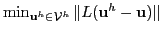
. The FOSLL method looks for an approximation in the range of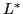
, setting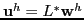
and choosing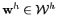
, a standard finite element space. FOSLL minimizes the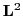
norm of the error over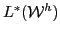
, that is,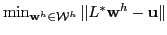
. FOSLS enjoys a locally sharp, globally reliable, and easily computable a posterior error estimate, while FOSLL does not.The hybrid method attempts to retain the best properties of both FOSLS and FOSLL . This is accomplished by combining the FOSLS functional, the FOSLL functional, and an intermediate term that draws them together. The Hybrid method produces an approximation,
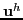
, that is nearly the optimal over in the graph norm,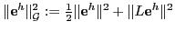
. The FOSLS and intermediate terms in the Hybrid functional provide a very effective a posteriori error measure.We show that the hybrid functional is coercive and continuous in the graph-like norm with modest constants,
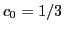
and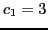
; that both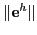
and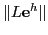
converge with rates based on standard interpolation bounds; and that if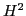
regularity, the error, , converges with a full power of the discretization parameter,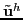
denote the optimum over in the graph norm, we also show that if superposition is used, then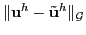
converges two powers of